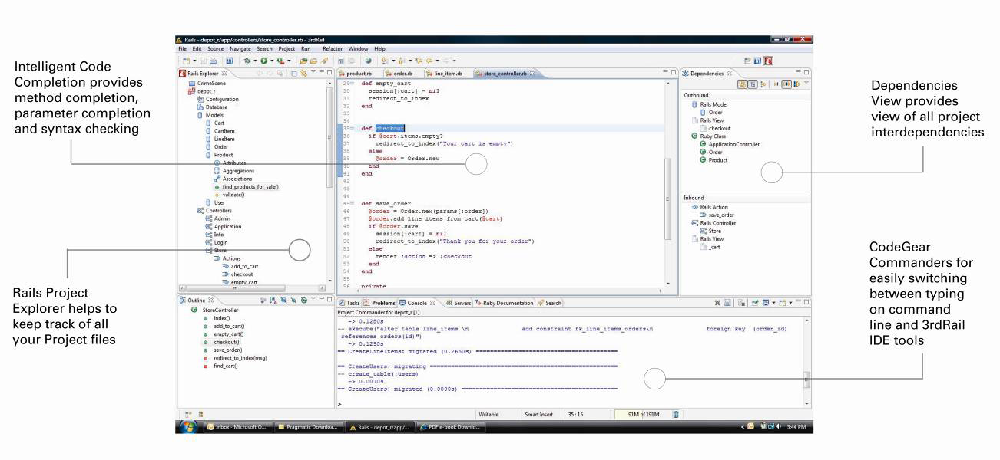

CodeGear brand
and product names are service marks, trademarks or registered trademarks of Borland Software
Corporation in the United States and other countries.
CodeGear brand
and product names are service marks, trademarks or registered trademarks of Borland Software
Corporation in the United States and other countries.
CodeGear 3rdRail is a complete, integrated development environment built from the ground up to bring high efficiency coding and visualization tools to Ruby on Rails development. Combining the straightforward yet powerful syntax of the Ruby language and the robust Rails framework with advanced productivity tools, 3rdRail streamlines the creation of database-backed web applications while retaining the full dynamic nature of Ruby programming.
3rdRail understands how a Ruby on Rails application works and the context of what you are doing. 3rdRail helps you write programs with accuracy and fewer keystrokes because you do not need to remember fine points such as object types, methods and method signatures. 3rdRail predicts likely expectations based on conventions and semantics and is able to understand the context of what you are coding.
Special productivity wizards combine related steps into single operations, and embedded Web development tools – including the Mozilla browser, JavaScript debugging, Document Object Model inspection and request monitoring – help you easily edit and manage all of your website artifacts.
Here is a snapshot of 3rdRail: 
For a brief visual tour, see Take a Tour of 3rdRail.
See the complete list of 3rdRail features at: 3rdRail Feature Matrix.
For more information about CodeGear 3rdRail, see:
CodeGear brand
and product names are service marks, trademarks or registered trademarks of Borland Software
Corporation in the United States and other countries.